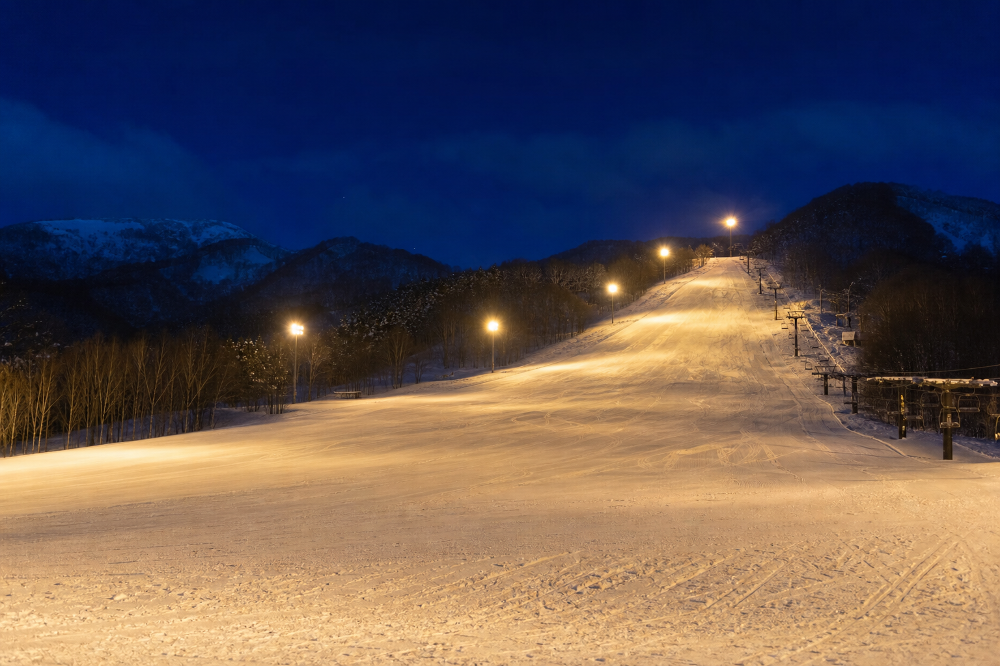

Stay · Corridor
ラグジュアリー・ウェルネスからヘリテージホテルまで——5つの拠点
客室タイプ・料金・送迎は各施設の公式予約サイトが最新です。
定山渓の森、小樽の歴史街、それぞれが北海道の魅力を異なるアプローチで翻訳する宿。
Area map
スキー場・飲食・温泉と重ねて旅程を組み立て。
5 picks
プライベート温泉、食の宿、ヘリテージ、都市観光ホテル——ニーズ別に厳選。
ラグジュアリー · 全室展望風呂 · EV16台
ニセコ基準のインターナショナル・ホスピタリティ。プライベート温泉体験の最高峰。
ウェルネス · サウナ · バリアフリー
森との一体化——スキー後のアフタースキー・リカバリー拠点。
食の宿 · 客室露天 · 系列回遊
和食の神髄と翠蝶館・ベーカリーへの徒歩圏マイクロツーリズム。
ヘリテージ · 旧越中屋 · バー
歴史的建造物の再生——Heritage Tourismの強力なフック。
星野 · バリアフリー · ご近所マップ
運河徒歩3分——地域密着型ディープ探索の都市観光ホテル。